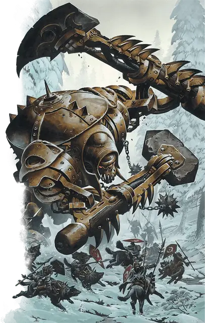

Кованый титан
Warforged Titan
Огромный Конструкт, законно-нейтральный

Класс Доспеха 20 (природный доспех)
Хиты 125 (10к12 + 60)
Скорость 40 футов
| мод | спас | ||
|---|---|---|---|
| СИЛ | 23 | +6 | +6 |
| ЛОВ | 8 | −1 | −1 |
| ТЕЛ | 22 | +6 | +6 |
| мод | спас | ||
|---|---|---|---|
| ИНТ | 3 | −4 | −4 |
| МДР | 11 | +0 | +0 |
| ХАР | 1 | −5 | −5 |
Иммунитет к урону психическая энергия, яд
Иммунитет к состояниям окаменение, отравление, паралич, очарование, испуг, истощение
Чувства тёмное зрение 60 футов, пассивное Восприятие 10
Опасность 8 (3900 опыта)
Бонус мастерства +3
Особенности
Языки. Понимает один язык своего создателя, но не говорит.
Платформы. У кованых титанов есть две платформы, встроенных в его ноги. Одно существо Среднего размера или меньше может перемещаться на каждой платформе, без протискивания. Чтобы совершить рукопашную атаку оружием по цели в пределах 5 футов от кованого, оно должно использовать копьё или оружие с большой досягаемостью, а цель должна быть Большого размера или ещё больше.
Осадный монстр. Кованый титан наносит двойной урон объектам и сооружениям.
Действия
Мультиатака. Кованый титан совершает одну атаку рукой-топором и одну атаку кулаком-молотом.
Рука-топор. Рукопашная атака оружием: +9 к попаданию, досягаемость 10 футов, одна цель. Попадание: 19 (3к8 + 6) рубящего урона, плюс 11 (2к10) рубящего урона, если цель сбита с ног.
Кулак-молот. Рукопашная атака оружием: +9 к попаданию, досягаемость 10 футов, одна цель. Попадание: 19 (3к8 + 6) дробящего урона. Если цель является существом, то оно должно преуспеть в спасброске Силы Сл 17, иначе оно будет сбито с ног.
Взмах топором (Перезарядка 6). Кованый титан совершает взмах топором, и каждое существо в пределах 10 футов от него должно совершить спасбросок Ловкости Сл 17. Существо получает 19 (3к8 +6) рубящего урона в случае провала и половину урона в случае успеха.
Описание
Кованые Титаны -это неуклюжие конструкты, построенные для того, чтобы прокладывать пути разрушения через вражеские армии. Одни из самых ужасающих бойцов Последней Войны, кованые титаны едва обладают достаточным интеллектом, чтобы следовать командам.
Наследие гигантов. В эпоху Великанов изобретатели создавали безмозглых боевых големов, чтобы помочь им в их войне против куори. Тысячелетия спустя некоторые из этих големов были обнаружены искателями приключений искавших секреты той эпохи, а затем переданы изобретателям, работавшим на Великие Дома во время Последней Войны. Дом Каннит изучал этих конструктов, и в процессе раскрытия секретов големов и изобретателей гигантов Каннит создали первых кованых титанов.